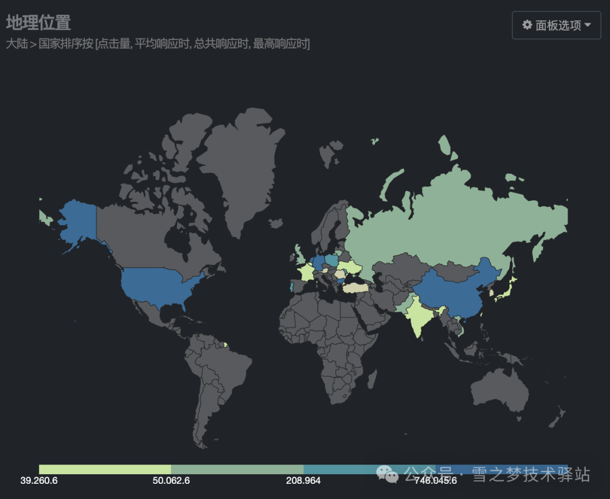
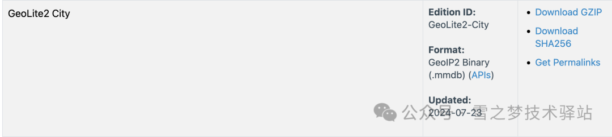
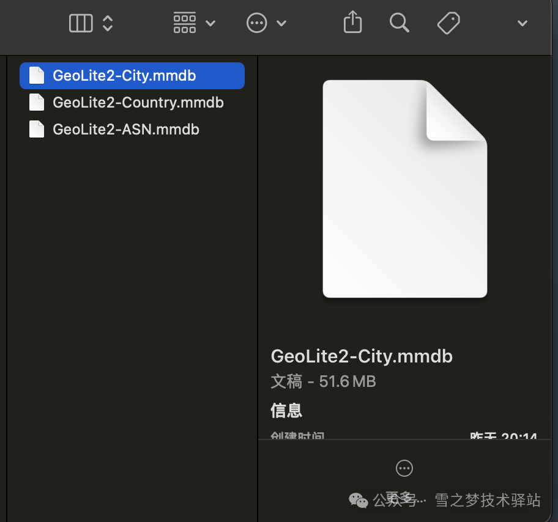

1. GoAccess地理位置
致读者: 点击上方 “雪之梦技术驿站” → 点击右上角“ ... ”→ 点选“设为星标★ ” 加上星标，就不会找不到我啦！想象一下，你站在世界地图前，手中的放大镜缓缓移动，寻找着那些隐藏在数字海洋中的神秘岛屿——IP地址。今天，我们要介绍的GoAccess，就是这样一款能够将IP地址转化为全球地理分布的强大工具。

1.1.1. 一窥数字世界背后的真实
你有没有想过，当你浏览网页时，你的IP地址就像是一张张明信片，记录着你的在线行为并发送给网站管理员。而对于网站管理员来说，如何有效分析这些数据，了解访问者的地理位置分布，就成了一个重要的问题。GoAccess的出现，为这一问题提供了完美的解决方案。
1.1.2. 探索GoAccess的神秘面纱
首先，让我们来看一个实际的案例。假设你拥有一个全球性的电商平台，每天都有成千上万的访客从世界各地涌入。通过GoAccess的数据分析，你可能会惊讶地发现，尽管你的商品在全球范围内都受欢迎，但某些特定地区在特定时间段内的访问量远远超出了你的预期。
# 输出到终端且生成一个可交互的报告
goaccess access.log
# 生成一份 HTML 报告
goaccess access.log -a -o report.html
# COMBINED | 联合日志格式
# VCOMBINED | 支持虚拟主机的联合日志格式
# COMMON | 通用日志格式
# VCOMMON | 支持虚拟主机的通用日志格式
# W3C | W3C 扩展日志格式
# SQUID | Native Squid 日志格式
# CLOUDFRONT | 亚马逊 CloudFront Web 分布式系统
# CLOUDSTORAGE | 谷歌云存储
# AWSELB | 亚马逊弹性负载均衡
# AWSS3 | 亚马逊简单存储服务 (S3)
# GoAccess 非常灵活，支持实时解析和过滤。例如：需要通过监控实时日志来快速诊断问题：
tail -f access.log | goaccess --log-format=COMBINED -
1.1.3. 开启地理解析之旅
配置GoAccess以实现地理IP解析并不复杂。首先，你需要从源代码编译安装GoAccess，并启用地理IP解析支持。这一步骤通过以下命令即可轻松完成：--enable-geoip=
“Compile with GeoLocation support. MaxMind's GeoIP is required. legacy will utilize the original GeoIP databases. mmdb will utilize the enhanced GeoIP2 databases.
$ git clone https://github.com/allinurl/goaccess.git
$ cd goaccess
$ autoreconf -fi
$ ./configure --enable-utf8 --enable-geoip=mmdb
$ make
# make install
1.1.4. 地理数据库的选择与配置
接下来，你需要获取并配置地理IP数据库。这里有两种数据库可供选择：标准GeoIP数据库和GeoIP2数据库。标准GeoIP数据库占用内存较少，适合对资源有限制的环境；而GeoIP2数据库则提供了更为详尽的地理位置信息。方式1: 下载标准 GeoIP 数据库
“
-g --std-geoip标准 GeoIP 数据库，低内存占用
# IPv4 Country database:
# Download the GeoIP.dat.gz
# gunzip GeoIP.dat.gz
#
# IPv4 City database:
# Download the GeoIPCity.dat.gz
# gunzip GeoIPCity.dat.gz
方式2: 下载GeoIP2数据库-MaxMind
“注意:
--geoip-city-data是--geoip-database的别名
# For GeoIP2 City database:
# Download the GeoLite2-City.mmdb.gz
# gunzip GeoLite2-City.mmdb.gz
#
# For GeoIP2 Country database:
# Download the GeoLite2-Country.mmdb.gz
# gunzip GeoLite2-Country.mmdb.gz
下载并解压相应的数据库文件后，你只需在GoAccess的命令行参数中指定数据库文件的位置，即可让工具在分析日志文件时自动将IP地址与地理位置关联起来。
“更多配置请参考官网用户手册
注册并登录maxmind,可以免费下载离线数据库.
然后一键直达数据库下载页面,有很多不同类型的数据库,选择GeoLite2 (.mmdb)

最后解压缩到本地,上传到服务器某路径下,接下来就可以让GoAccess具有解析地理位置的能力啦!

“如果不想自己下载数据库,开箱即用,可以私信「雪之梦技术驿站」评论回复领取!
1.1.5. 实时地理位置可视化
无论是生成静态的HTML报告，还是实时更新的HTML报告，都可以通过简单的命令行操作实现。例如，你可以使用以下命令生成一个包含地理位置信息的静态HTML报告：
# 静态HTML报告: 开启地理位置支持goaccess access.log -o report.html --log-format=COMBINED --geoip-database=/path/to/GeoLite2-City.mmdb
或者，如果你想实时查看数据，可以使用以下命令生成实时HTML报告：
# 实时HTML报告: 开启地理位置支持
goaccess access.log -o report.html --log-format=COMBINED --geoip-database=/path/to/GeoLite2-City.mmdb --real-time-html --daemonize
1.1.6. 地理位置的局限性
使用GoAccess的地理分析功能，你将能够直观地看到访问者的地理位置分布，这不仅能够帮助你更好地理解用户行为，还能够为你的商业决策提供数据支持。然而，值得注意的是，免费的数据库文件更新频率可能较低，这意味着某些IP地址可能无法解析出具体位置。但这并不妨碍我们利用现有数据做出明智的决策。
1.1.7. 结语
在这个数据为王的时代，让我们用GoAccess绘制出属于你的世界地图，让每一次访问都成为探索的起点，每一次分析都成为成功的基石。开启你的数据之旅，从这里开始。
1.2. 往期精彩文章
1.3. 您的关注是小站的动力
欢迎扫码关注,私信回复『加群』一起交流技术
作者: 雪之梦
链接: https://snowdreams1006.github.io/GoAccess/GoAccess-ip.html
来源: 雪之梦
本文原创发布于「雪之梦」,转载请注明出处,谢谢合作!